Hermes Studio 客户端完整操作手册
面向当前本机安装版本的中文操作说明，覆盖可见导航、设置、弹窗、状态页、关键按钮、常见流程与风险提示。
1. 文档适用范围与读者对象
本文档适用于需要使用、配置、运维或验收 Hermes Studio 客户端的个人用户、管理员、技术支持人员和内部培训对象。文档以当前电脑上实际运行的 Hermes Studio 客户端为准，官网和说明文档仅用于建立功能范围和差异核对。
2. 资料核对与版本差异
2.1 核对来源
- Hermes Studio 官方网站：https://hermes-studio.ai/，定位为 Hermes 智能体的自托管智能会话控制台。
- Hermes 网页界面说明文档：github.com/EKKOLearnAI/hermes-studio/README.md，列出会话、历史、频道、任务、技能、记忆、用量、终端、用户档案、设置等功能。
- Hermes 智能体官方文档：https://hermes-agent.nousresearch.com/docs/，用于核对智能体、网关、技能、记忆、MCP、消息网关和安全能力范围。
- MCP 官方功能页：Hermes 智能体 MCP 文档，用于核对 MCP 服务管理范围。
- 本机 Hermes Studio 0.6.12 设备接口：用于核对设备发现、扫描、配对状态、活跃连接、远程终端、远程命令和文件传输能力。
2.2 版本差异说明
| 来源功能 | 官网/说明文档/智能体文档描述 | 当前客户端观察结果 | 处理方式 |
|---|---|---|---|
| 访问端口 | 说明文档 npm 默认打开 localhost:8648，Docker 默认 localhost:6060。 | 桌面客户端实际打开 127.0.0.1:8748。 | 本文所有本机操作以 8748 为准。 |
| 智能体 / 群组 / 工作流 / 调度器 | 智能体文档提到委派、并行、调度、网关和多平台能力。 | 客户端有“群聊（测试版）”“编程工具”“版本预览”等页面，但未发现名为智能体库、可视化工作流构建器、调度器的独立页面。 | 不将未验证能力写成已验证独立模块。 |
| 记忆高级视图 | 智能体文档描述持久记忆与技能系统；用户验收清单要求知识图谱、纠错、身份文件。 | 当前客户端可见记忆页面为记忆条目列表和搜索；未观察到独立知识图谱或身份文件编辑器。 | 记忆章节记录已验证页面，高级能力仅作风险和差异说明。 |
| 执行审批 | 智能体安全文档涉及命令审批、授权、隔离。 | 当前未触发审批弹窗，也未发现独立审批页面；终端与会话存在可执行命令风险。 | 写为安全流程说明和风险建议，标记为“当前未触发”。 |
| 备份与恢复 | 说明文档描述多用户档案支持导入归档和导出用户档案。 | 当前用户档案页面可见创建、导入、导出、删除等入口；未发现全局备份恢复页面。 | 按用户档案级导入导出写入，未发现全局备份列入差异。 |
3. 快速上手流程
- 启动
Hermes Studio.app，等待客户端打开本地网页界面。 - 在浏览器或客户端窗口访问
http://127.0.0.1:8748；如出现登录页，输入已配置的用户名和密码。 - 进入左侧 对话 页面，确认顶部显示当前模型和用户档案。
- 在输入框输入测试提示词，点击发送，观察流式输出、工具调用和最终结果。
- 通过左侧导航检查 历史、任务、看板、频道、技能、MCP、设备、记忆、模型、日志、用量、性能监控、用户、设置 等页面。
- 配置密钥、模型服务商、MCP、频道令牌前，先确认用户档案和权限范围，避免把测试配置写入生产用户档案。
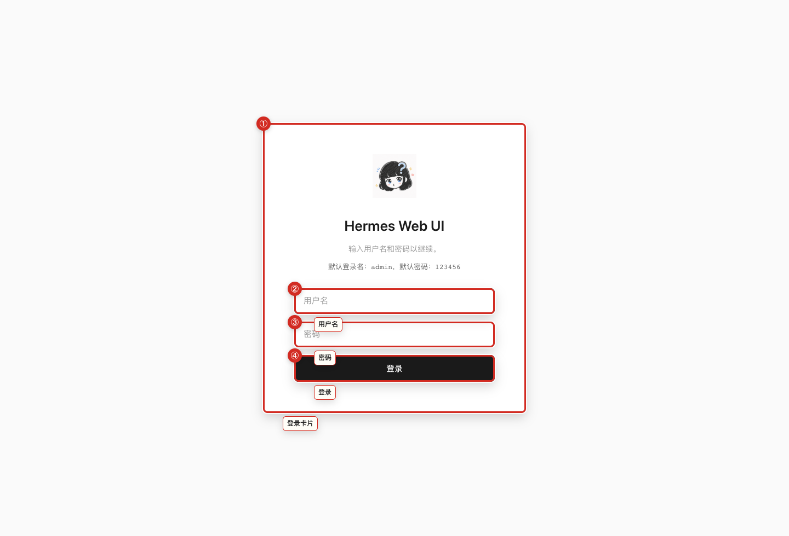
4. 界面总览
主界面采用左侧导航、顶部状态区、中央工作区和底部输入/状态区的布局。当前登录用户显示为超级管理员角色，当前模型入口位于聊天页顶部与输入区附近。左侧导航是功能盘点的主要依据。
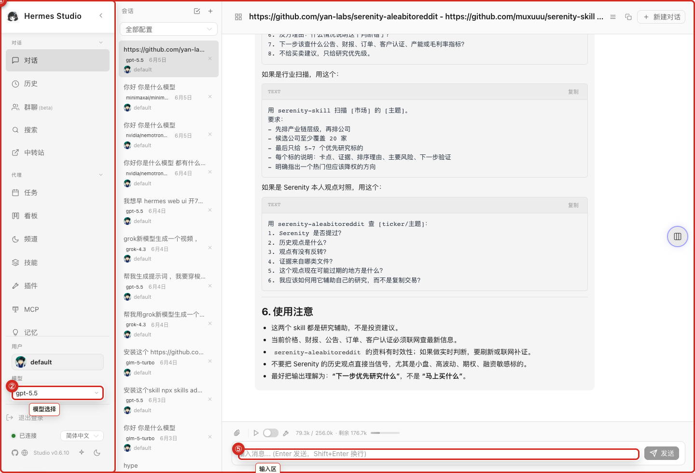
4.1 导航与状态区域
| 区域 | 用途 | 操作要点 |
|---|---|---|
| 左侧导航 | 进入会话、历史、任务、看板、频道、技能、MCP、设备、记忆、模型、日志、用量、设置等页面。 | 逐项点击即可切换页面；外链“中转站”会打开 apikey.fun。 |
| 顶部栏 | 显示当前页面标题、模型、状态或功能按钮。 | 不同页面顶部按钮不同，例如新建任务、新建房间、添加模型服务商。 |
| 底部输入区 | 聊天输入、文件/终端抽屉、模型选择、发送控制。 | 发送前确认模型和用户档案；长任务可使用停止或重试类按钮。 |
| 状态徽标 | 显示模型、用户档案、连接状态、运行状态等。 | 出现红色或错误提示时，优先查看日志和性能监控。 |
4.2 全局搜索与命令入口
- 点击左侧“搜索”入口或使用页面中搜索按钮。
- 在弹窗输入关键词。
- 从结果中进入对应会话、任务、记忆或配置项。
- 关闭弹窗后回到原页面。
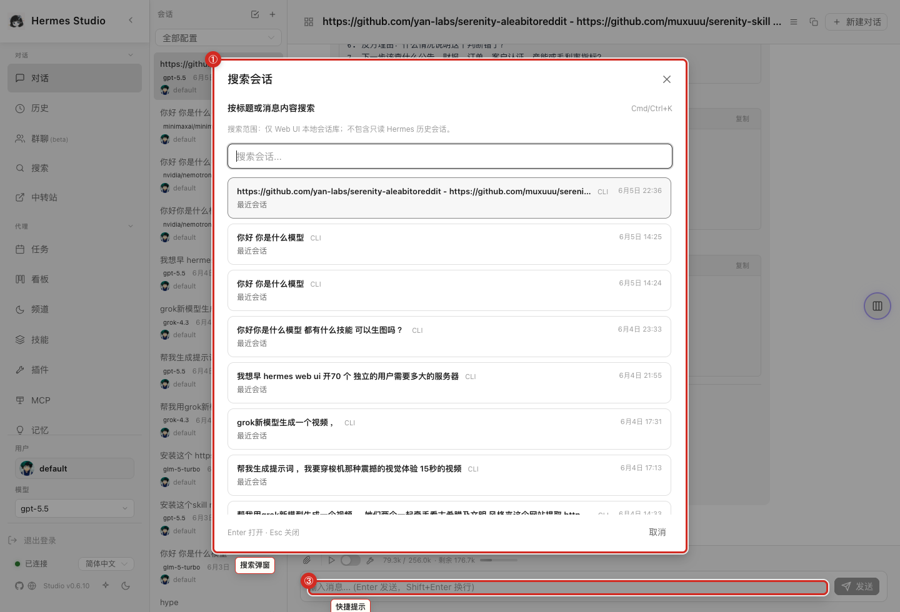
5. 会话与流式输出
功能用途：用于与 Hermes 智能体进行实时对话、调用工具、查看推理或工具结果，并保存会话上下文。
入口位置：左侧导航 对话。
前置条件：已登录；网关与模型模型服务商可用；当前用户档案有访问目标模型的权限。
5.1 新建聊天并发送消息
- 进入 对话 页面。
- 确认顶部或底部显示的模型名称，必要时点击模型选择器切换。
- 在底部输入框输入提示词。
- 点击发送按钮，等待流式输出。
- 输出完成后检查回复内容、工具调用展开项、错误提示和会话记录。
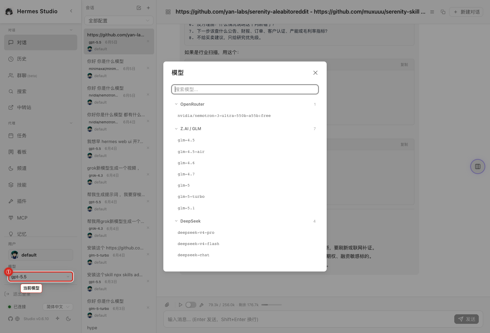
5.2 工具调用、停止、重试、复制
- 在对话输出中查看工具调用块；展开后可检查参数、运行状态和返回结果。
- 长时间任务可使用停止按钮中止当前输出。
- 失败后使用重试或重新发送，必要时切换模型或降低任务复杂度。
- 使用复制按钮复制最终回答；复制前检查是否包含敏感信息。
5.3 会话保存、恢复、切换、删除
- 发送消息后，当前会话会出现在历史列表。
- 进入 历史 页面可恢复完整线程。
- 如页面提供删除入口，点击前确认该会话不再需要。
- 删除后回到历史页确认记录已移除。
5.4 附件与文件引用
当前对话页可见文件/工作区抽屉入口，支持浏览或引用工作区文件。未观察到在聊天输入区直接上传附件后的完整演示流程；需要文件操作时优先使用 工作区 抽屉。
6. 会话历史
入口位置：左侧导航 历史。
功能用途：查看历史会话列表、按来源分组、恢复会话、检查时间与消息摘要。
- 点击左侧 历史。
- 使用顶部搜索框或过滤器查找目标会话。
- 点击会话条目打开完整消息线程。
- 如页面提供排序或来源分组，按最新消息、平台来源或活跃状态定位。
- 如需要删除或归档，先确认该会话不含需保留的业务记录。
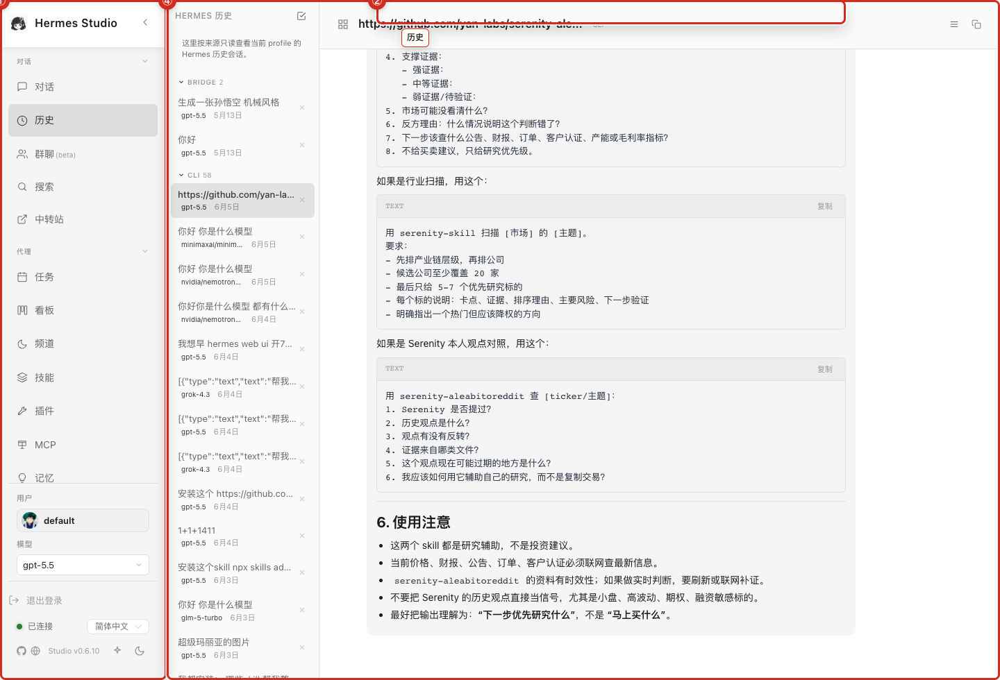
7. 记忆管理
入口位置：左侧导航 记忆。
功能用途：浏览、搜索和管理 Hermes 的持久记忆条目，辅助跨会话召回。
- 进入 记忆 页面。
- 使用搜索框按关键词查找记忆。
- 查看条目内容、时间、来源和标签信息。
- 如页面提供新增、编辑或删除入口，使用前确认当前用户档案。
- 完成变更后刷新或重新搜索，验证条目已按预期变化。
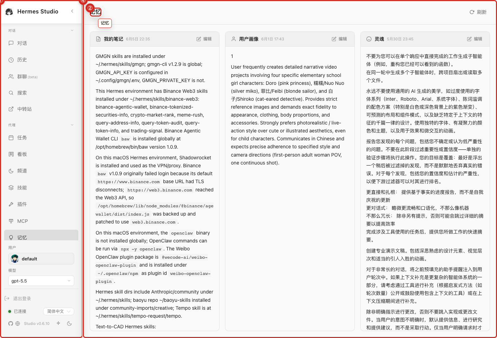
8. 技能与插件管理
8.1 技能列表
入口位置：左侧导航 技能。
功能用途：浏览已安装或可用技能，查看技能名称、分类、状态和详情。
- 点击 技能。
- 使用搜索框按名称或能力查找技能。
- 点击技能卡片或详情按钮查看说明、来源、权限和版本信息。
- 如提供安装、启用、停用或卸载按钮，先确认技能来源可信。
- 安装失败时查看错误提示，并到 日志 页面检索依赖或权限错误。
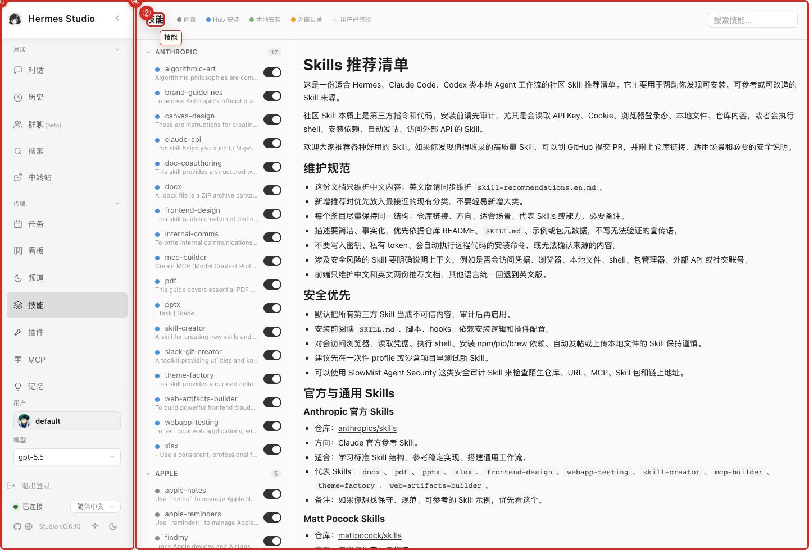
8.2 插件清单
入口位置：左侧导航 插件。
功能用途：查看插件域、插件包、包含的技能或工具集合。
- 进入 插件 页面。
- 查看插件名称、来源、状态和描述。
- 使用搜索或筛选定位目标插件。
- 如需要删除或禁用插件，先确认其是否被当前任务、MCP 或技能依赖。
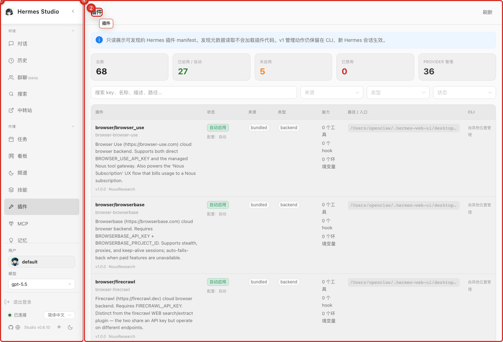
9. 终端、文件与工作区
9.1 文件工作区
入口位置：对话页底部或侧边的 工作区 抽屉入口。
功能用途：浏览工作区文件，进行上传、下载、打开、创建目录或查看文件内容等操作。
- 进入 对话 页面。
- 点击工作区或文件图标打开抽屉。
- 在文件树中选择目录或文件。
- 根据页面按钮执行打开、下载、上传、创建目录等操作。
- 完成后检查文件列表刷新，确认文件存在且路径正确。
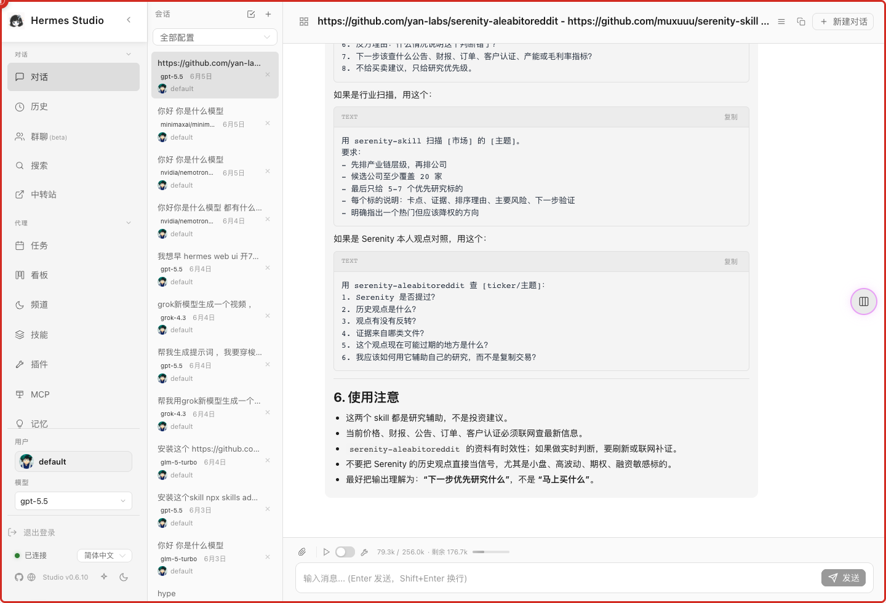
9.2 网页终端
入口位置：对话页底部或侧边的 终端 抽屉入口。
功能用途：在网页界面内执行命令、查看输出、辅助排查运行环境。
- 点击终端图标打开网页终端。
- 确认当前工作目录和用户档案。
- 输入只读命令进行诊断，例如查看版本或列出当前目录。
- 观察输出区域和错误提示。
- 结束后关闭终端抽屉，避免误输入命令。
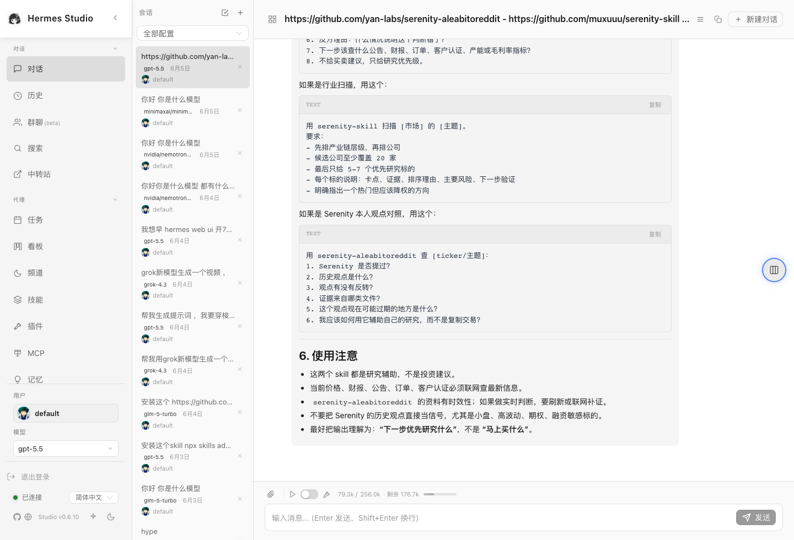
10. 执行审批
当前遍历过程中未触发独立的审批弹窗，也未发现名为执行审批的独立页面。Hermes 智能体文档中存在命令审批和授权相关能力，因此本节记录应对流程和验收口径。
| 审批场景 | 应查看内容 | 建议动作 |
|---|---|---|
| 智能体请求执行命令 | 命令全文、工作目录、上下文、目标文件、是否联网。 | 只读诊断可按一次性批准；写入、删除、上传、发消息需人工复核。 |
| 仅批准一次 | 仅本次执行。 | 用于低风险、可复核、可重复的单次操作。 |
| 本次会话批准 | 当前会话内同类操作。 | 仅用于受控测试会话，不建议在生产用户档案中长期使用。 |
| 始终允许 | 长期放行。 | 高风险。仅在工具来源可信、命令范围清晰、已有备份时使用。 |
| 拒绝 | 拒绝执行。 | 命令涉及删除、密钥、外发数据或不可逆变更时优先选择。 |
11. 定时任务管理
入口位置：左侧导航 任务。
功能用途：创建、编辑、暂停、恢复、删除定时任务，支持定时表达式、预设计划、投递渠道和运行日志。
11.1 查看任务列表
- 点击左侧 任务。
- 查看任务名称、状态、计划、最近运行时间和输出摘要。
- 使用刷新或自动刷新状态确认任务是否正在运行。
- 点击任务条目查看详情或运行日志。
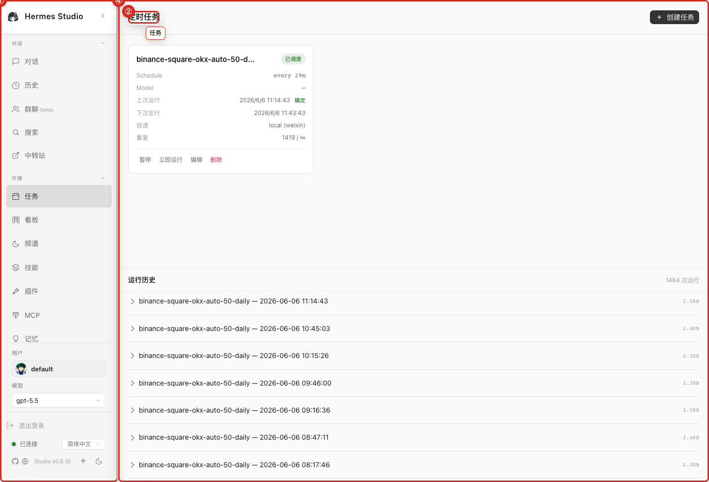
11.2 新建定时任务
- 点击 新建任务 或同义按钮。
- 填写任务名称，例如演示任务。
- 填写自然语言提示词，说明任务目标、输出格式和投递要求。
- 选择预设计划，或输入自定义定时表达式。
- 选择投递渠道，例如 Telegram、Discord、Slack 或当前页面可见渠道。
- 选择技能、重复次数、是否启用等选项。
- 保存后返回任务列表，检查状态和下次运行时间。
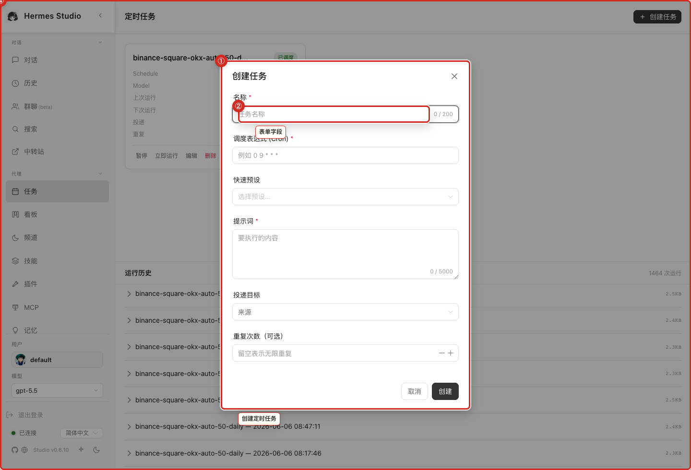
11.3 手动立即触发与运行日志
- 在任务列表选择目标任务。
- 点击 立即触发 或当前界面同义按钮。
- 查看实时运行日志、最近输出和状态变化。
- 如任务失败，复制错误摘要，在日志页面按任务名称或时间检索。
12. 多智能体群聊（测试版）
入口位置：左侧导航 群聊（测试版）。
功能用途：创建多智能体聊天房间，添加成员，使用 @提及 路由给指定智能体，观察实时活动流。
12.1 查看群聊房间
- 点击 群聊（测试版）。
- 查看房间列表、成员数量、最近活动和状态。
- 点击房间进入聊天流。
- 使用 @成员名将任务派发给指定成员，或发送普通消息给全部成员。
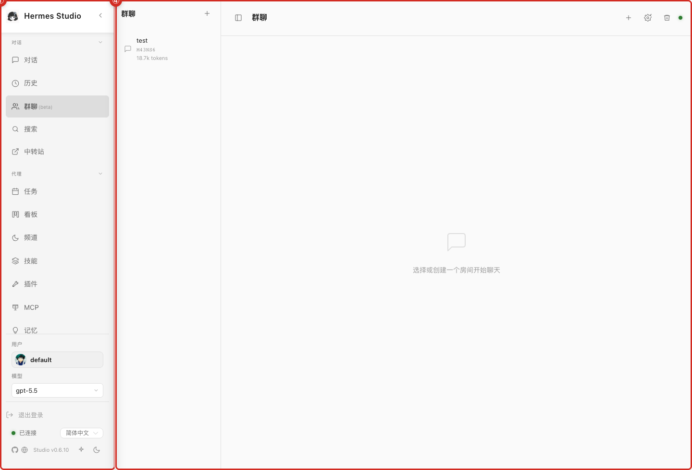
12.2 创建群聊房间
- 点击 新建房间。
- 填写名称，例如演示群组。
- 填写目标或描述，说明团队任务边界。
- 选择内置人格智能体或添加自定义成员。
- 保存后进入房间，检查成员列表和实时消息流。
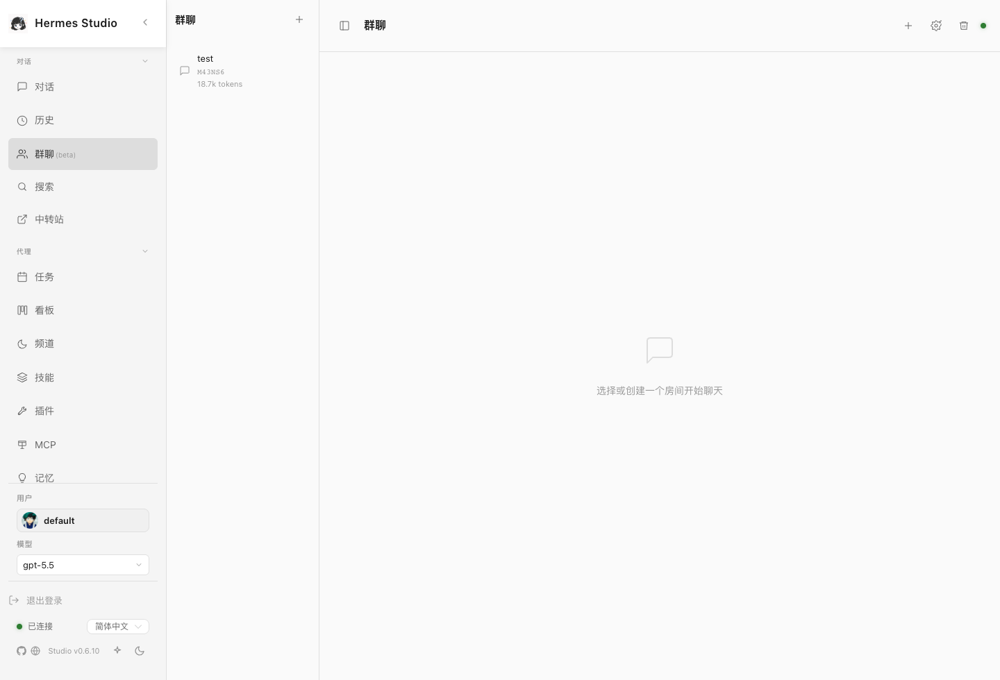
13. 智能体库
当前客户端未发现名为 智能体库 的独立一级导航。可替代的可见能力包括：群聊（测试版） 中选择成员或人格智能体，用户档案页面中创建/克隆用户档案，会话页面中选择模型或用户档案。
14. 可视化工作流与调度器
当前遍历未发现 可视化工作流构建器、调度器、任务编排 的独立页面或左侧导航。未观察到节点画布、依赖连线、圆桌/战情室布局、研究/构建/评审/部署模板、并行数配置、任务成本历史等独立界面。
15. 运行监控面板
入口位置：左侧导航 性能监控，并结合 日志、用量、技能用量 查看运行状态。
功能用途：观察系统健康、资源占用、运行时间、请求状态和错误定位。
- 点击 性能监控。
- 查看 CPU、内存、磁盘、运行时间和网关状态。
- 如出现异常，切换到日志页面按时间检索错误。
- 如怀疑成本或模型调用异常，进入用量页面查看令牌与成本趋势。
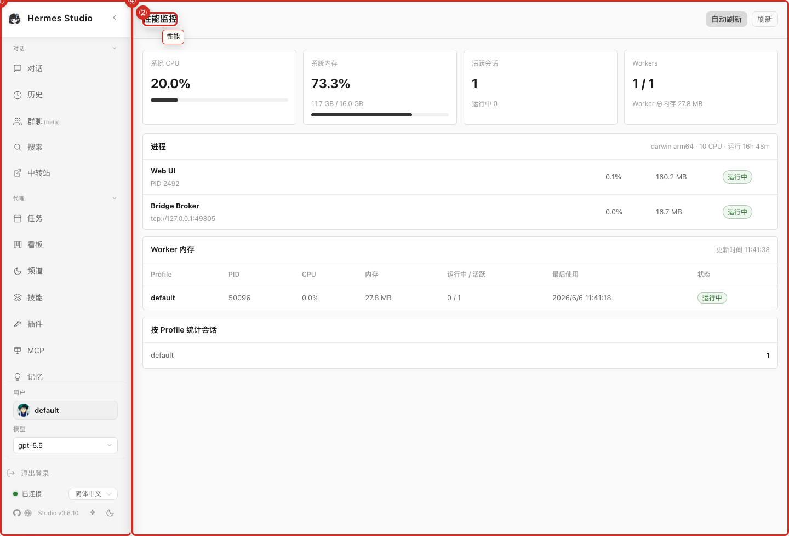
16. 任务与看板
入口位置：左侧导航 看板。
功能用途：以待办池、待办、进行中、评审、完成等列管理任务卡片。
16.1 查看与移动任务
- 进入 看板 页面。
- 查看不同状态列中的任务卡片。
- 按优先级、标签、负责人或来源链接识别任务。
- 拖拽任务卡片到目标列，改变状态。
- 打开任务详情，检查评论、描述、阻塞状态或完成状态。
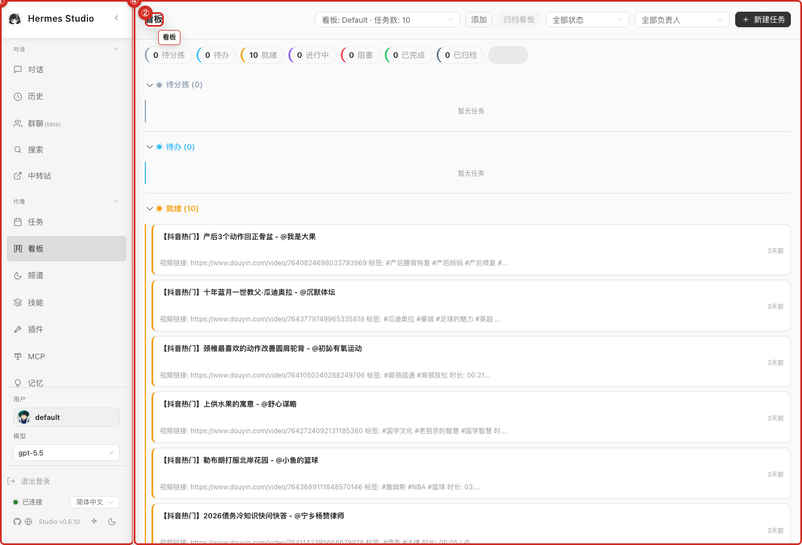
16.2 新建任务卡片
- 点击 新建任务。
- 填写标题，例如“演示任务”。
- 填写描述、优先级、标签、来源链接和负责人。
- 选择初始状态列。
- 保存后返回看板，确认卡片出现在指定列。
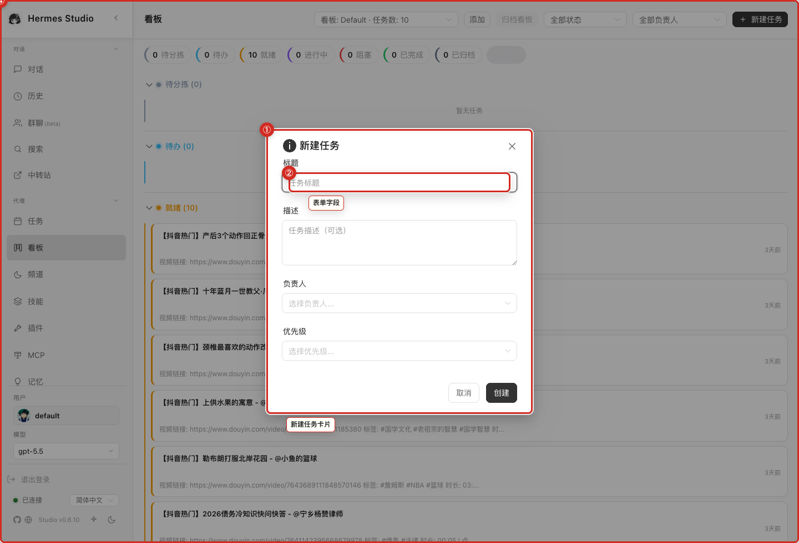
17. 成本与用量分析
入口位置：左侧导航 用量 与 技能用量。
功能用途：查看令牌输入/输出、模型维度、会话维度、趋势图、技能调用和成本估算。
- 进入 用量 页面。
- 查看总令牌、输入/输出拆分、成本估算和图表。
- 切换时间范围，观察近期趋势。
- 按模型、会话或用户档案维度定位异常成本。
- 进入 技能用量 查看技能调用频率和工具使用分布。
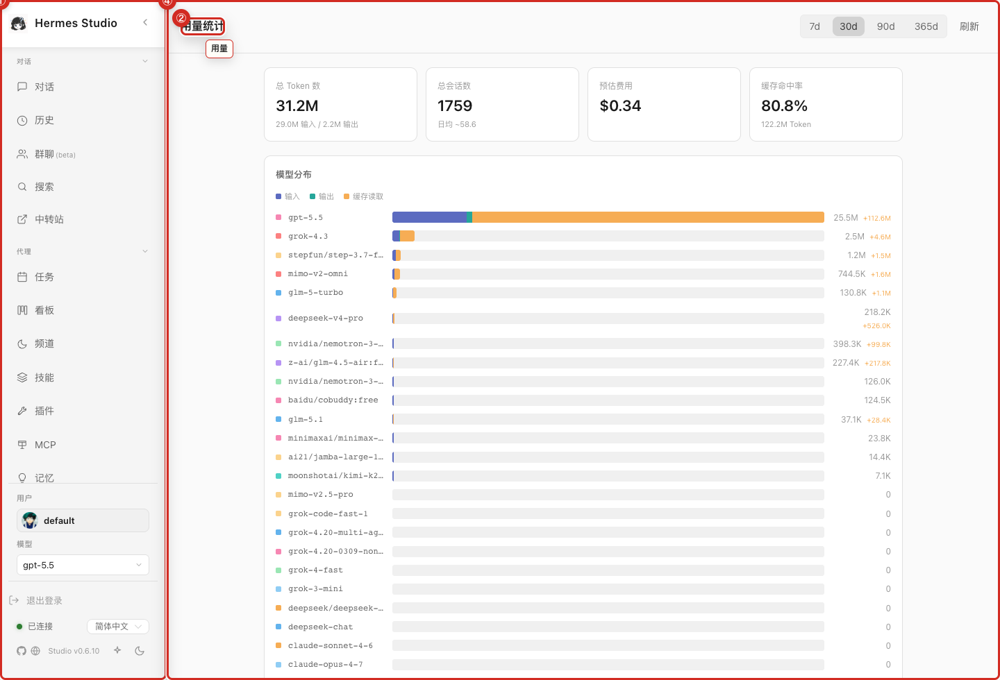
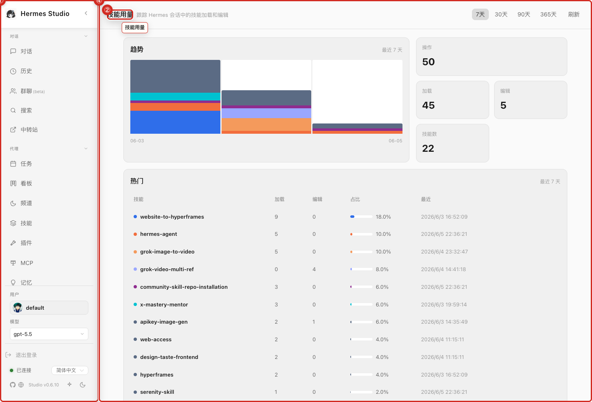
18. 日志查看
入口位置：左侧导航 日志。
功能用途：查看最近日志、按级别筛选、搜索错误、辅助排查模型、MCP、终端、网关和任务问题。
- 点击 日志。
- 选择“全部”或“错误”筛选。
- 在搜索框输入关键词，例如模型服务商、网关、MCP、定时任务。
- 开启或关闭自动滚动，便于观察实时错误。
- 将错误时间与会话、任务、用量页面中的异常事件对应起来。
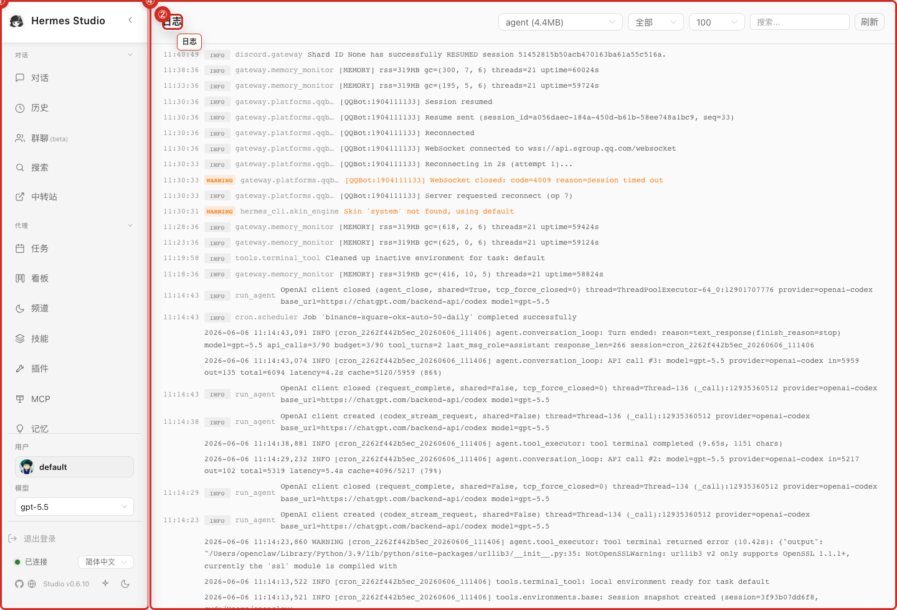
19. MCP 服务管理
入口位置：左侧导航 MCP。
功能用途：管理 MCP 服务器，向 Hermes 暴露外部工具、资源和提示。
19.1 查看 MCP 服务器列表
- 点击 MCP。
- 查看服务器名称、类型、命令、URL、启用状态和连接状态。
- 按需重载或刷新服务器状态。
- 进入日志页面确认启动失败、环境变量缺失或连接超时等错误。
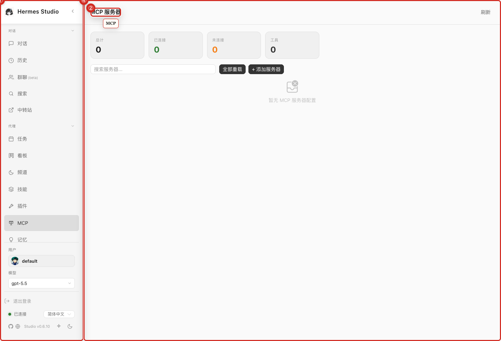
19.2 新增 MCP 服务
- 点击新增 MCP 服务。
- 填写服务器名称。
- 选择标准输入输出或 HTTP 类型。
- 标准输入输出类型填写命令、参数、环境变量；HTTP 类型填写 URL 和认证信息。
- 保存后触发重载。
- 返回列表检查连接状态，并在会话中验证 MCP 工具是否可被调用。
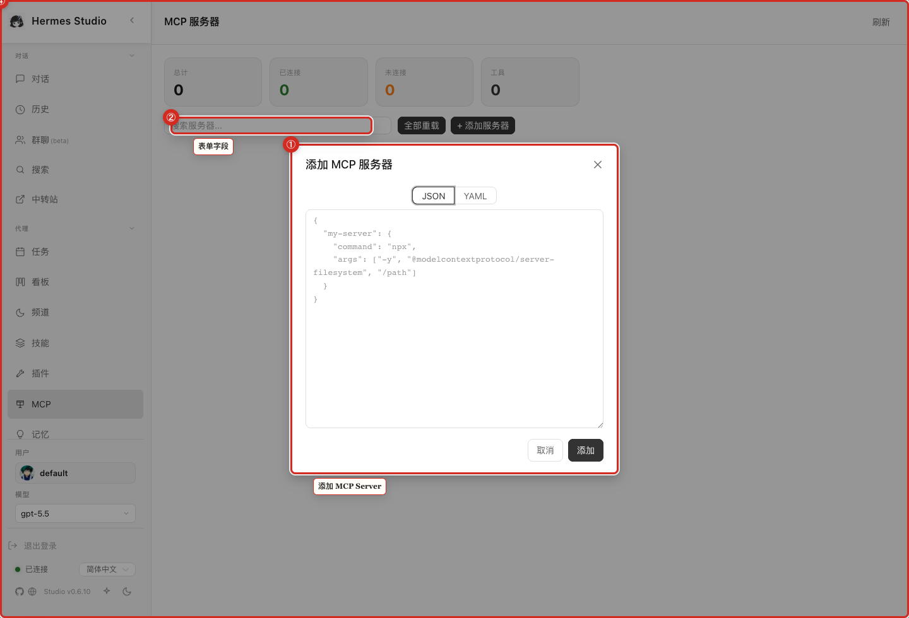
20. 平台集成
入口位置：左侧导航 频道。
功能用途：配置 Telegram、Discord、Slack、WhatsApp、Matrix、Feishu、WeChat、WeCom 等消息渠道的凭据、启用状态和网关行为。
- 进入 频道 页面。
- 选择目标平台卡片。
- 填写令牌、机器人编号、网络回调、密钥或页面要求的凭据。
- 启用平台，并使用测试连接按钮验证。
- 查看网关状态和日志页面，确认平台已连接。
- 为定时任务或会话选择投递渠道时，确认渠道处于已配置状态。
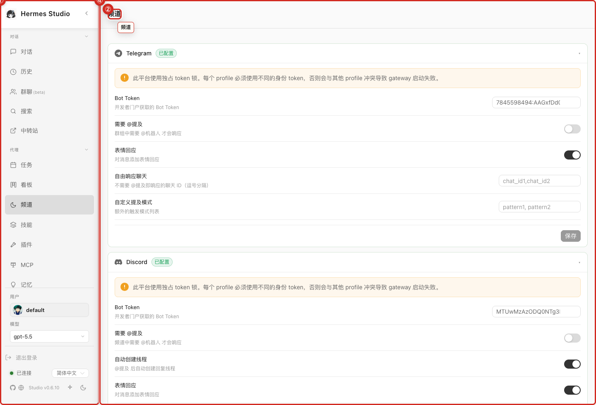
21. 设备管理
入口位置：左侧导航 设备。
功能用途：发现局域网或远程 Hermes 设备，查看在线状态、系统信息、版本、延迟和配对状态，并在配对后建立远程连接。
- 进入 设备 页面。
- 查看设备列表中的电脑名称、端点类型、访问地址、系统、Hermes Agent 版本、网页界面版本、延迟和最后发现时间。
- 点击刷新或扫描，更新局域网设备发现缓存。
- 检查入站和出站配对状态；未配对设备需要先发起配对请求，已配对设备才能连接。
- 连接前确认目标设备名称和地址，避免把远程终端、文件传输或命令执行发到错误设备。
- 不再使用时断开活跃连接，并回到设备列表确认状态变化。
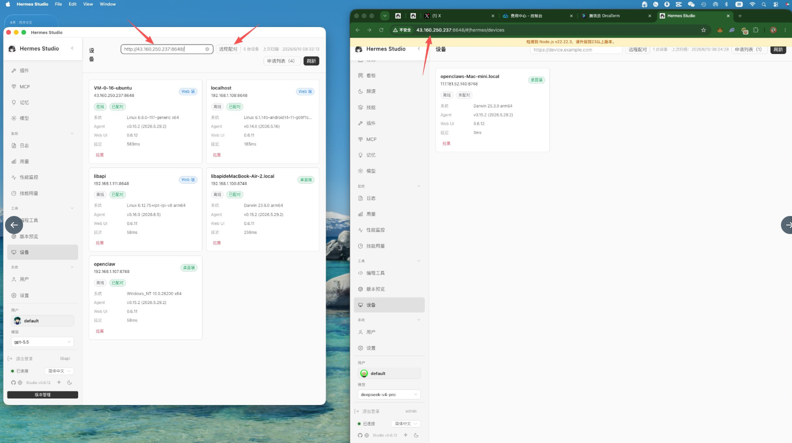
| 操作 | 作用 | 注意事项 |
|---|---|---|
| 刷新/扫描设备 | 更新已知设备和在线状态。 | 扫描结果受网络、端口、防火墙和对端 Hermes 服务状态影响。 |
| 按地址配对 | 手动输入设备地址，向远端发送配对请求。 | 只对可信设备发起；确认地址、端口和设备名称后再批准。 |
| 连接已配对设备 | 建立远程对等连接，用于后续终端、命令和文件操作。 | 连接前确认入站/出站状态均符合预期。 |
| 远程终端 | 在已连接设备上创建交互式终端。 | 权限和风险等同于在目标设备本地执行命令。 |
| 远程命令 | 向已连接设备发送命令和参数。 | 优先执行只读诊断；写入、删除、安装、停止服务前需人工复核。 |
| 文件上传/下载 | 在本机和远程设备之间传输文件。 | 确认路径、覆盖风险和敏感文件范围；完成后检查文件大小和位置。 |
22. 设置
入口位置：左侧底部 设置。
当前可见页签：当前账户/账户管理、显示、代理、记忆、上下文压缩、会话、隐私、模型、语音。
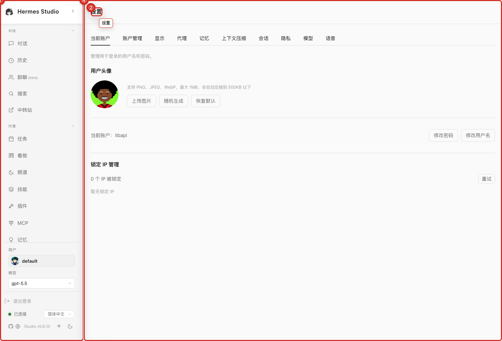
22.1 账户管理
- 进入 设置。
- 选择账户相关页签。
- 查看当前用户名、角色、会话状态和账户列表。
- 需要修改用户名或密码时，打开账户编辑弹窗。
- 保存前确认新凭据已记录在安全位置。
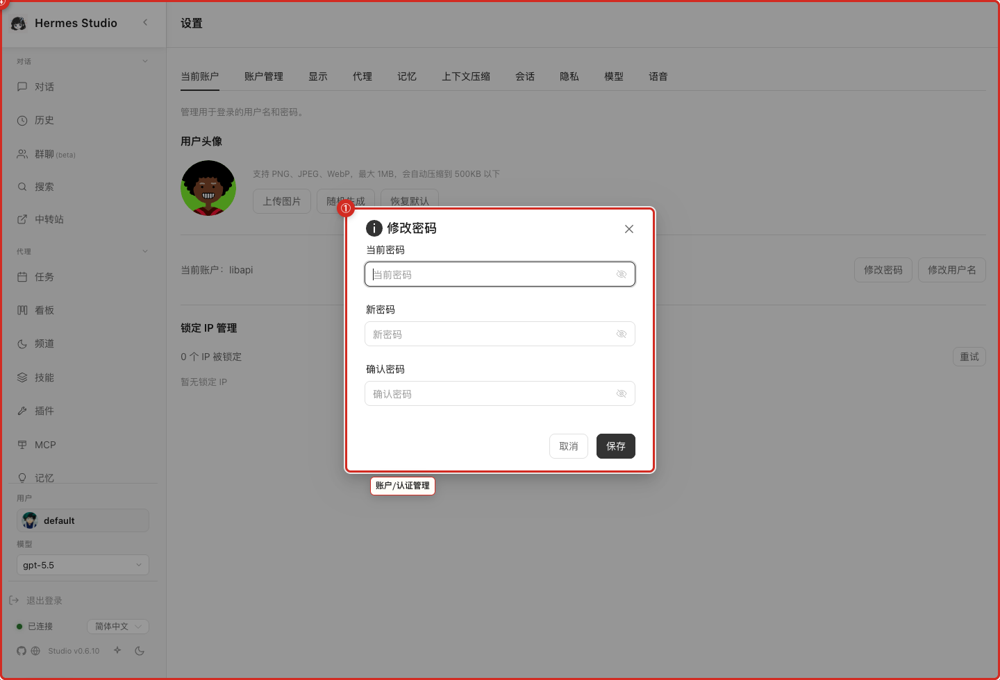
22.2 模型服务商设置
入口位置：左侧 模型，或设置的 模型 页签。
功能用途：管理模型服务商、默认模型、兼容 OpenAI 的端点、授权登录或接口密钥凭据。
- 进入 模型 页面。
- 查看当前模型服务商列表、默认模型和可用模型。
- 点击添加模型服务商。
- 选择预设模型服务商或填写自定义兼容 OpenAI 的端点。
- 输入凭据并保存；保存后测试模型列表是否能拉取。
- 回到会话页面，在模型选择器中验证新模型可见。
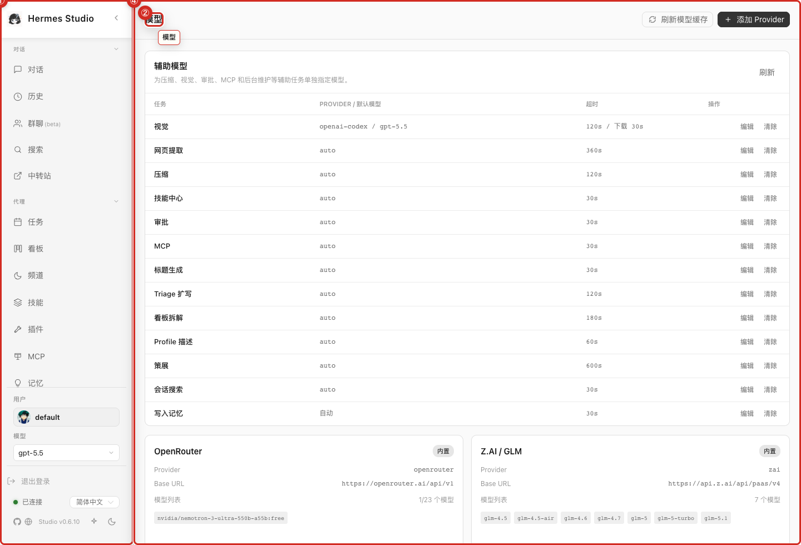
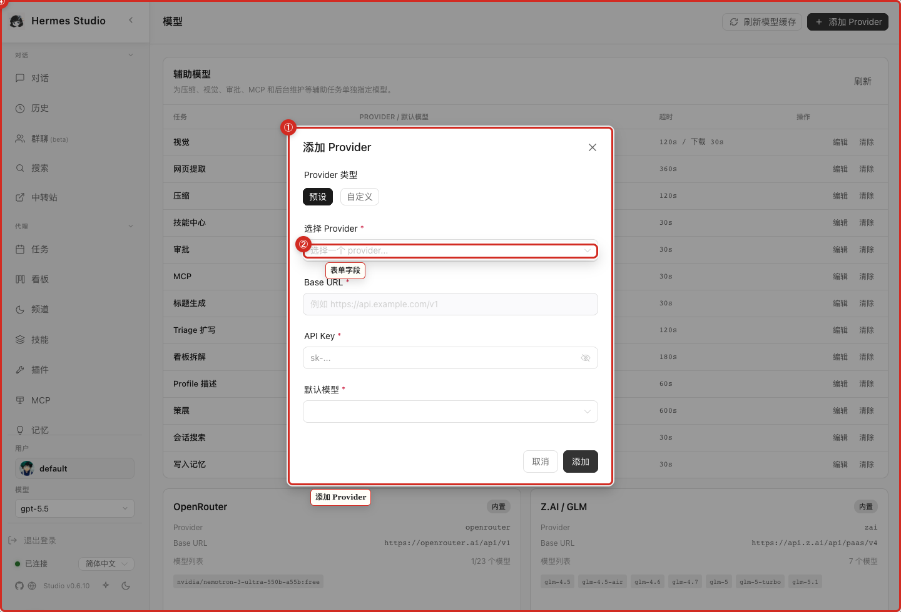
22.3 显示、代理、记忆、会话、隐私、语音
| 页签 | 用途 | 操作与验证 |
|---|---|---|
| 显示 | 主题、紧凑模式、流式显示、推理和成本显示。 | 调整后返回会话页面，确认界面风格和输出信息按预期变化。 |
| 代理 | 智能体运行限制、最大轮次、超时或工具策略。 | 修改前记录原值；长任务异常时可降低并发或调整超时。 |
| 记忆 | 启用/禁用记忆、字符限制等。 | 变更后通过记忆页面和新会话验证是否生效。 |
| 上下文压缩 | 长会话摘要和历史压缩策略。 | 用于控制超长会话成本；验证压缩后上下文仍保留关键事实。 |
| 会话 | 空闲超时、会话保持、重置策略。 | 修改后重新登录或等待超时，验证行为。 |
| 隐私 | 个人信息自动隐藏或隐私相关开关。 | 启用后用测试文本验证是否按预期隐藏敏感字段。 |
| 语音 | 语音输入或 TTS 相关设置。 | 配置后在支持语音的入口测试。 |
23. 备份、恢复与导入
入口位置：左侧 用户 / 用户档案页面。
功能用途：创建、克隆、导入、导出和删除用户档案，作为配置和数据隔离单位。
- 点击左侧 用户。
- 查看用户档案列表、当前激活用户档案和权限状态。
- 点击创建用户档案，填写名称和描述。
- 如需备份，使用导出入口生成用户档案归档。
- 如需恢复，使用导入入口选择归档文件。
- 恢复后切换到目标用户档案，检查模型、任务、记忆、技能和会话是否可用。
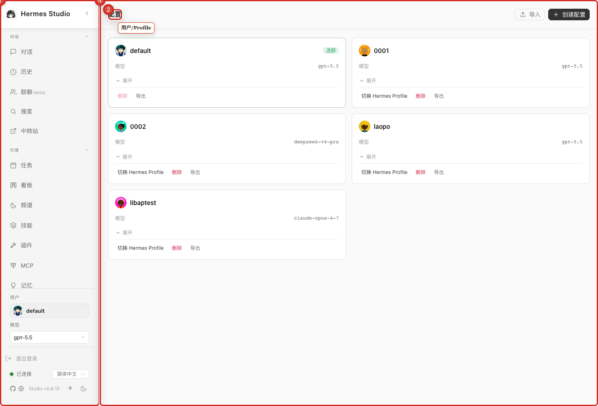
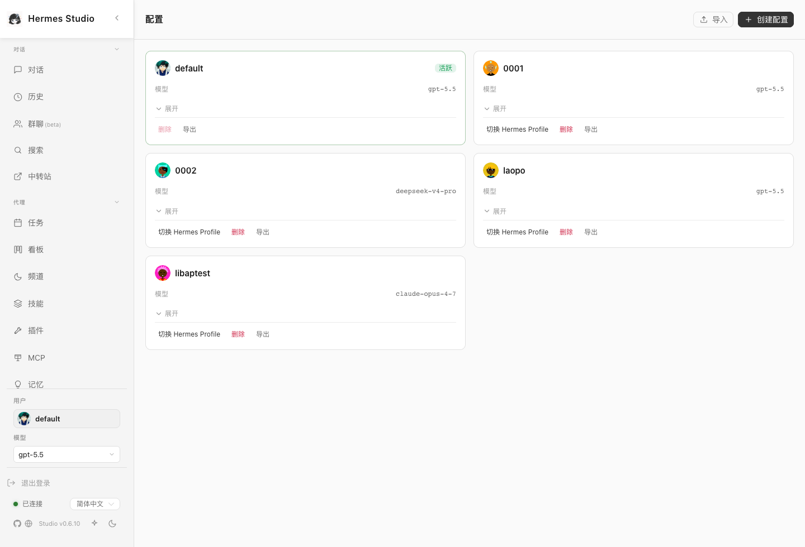
24. 安装为应用与桌面体验
当前电脑已安装 macOS 桌面客户端，未在当前客户端设置页中观察到独立的安装为应用入口。浏览器版可以使用 Chrome 或 Edge 的“安装此站点为应用”能力，但此能力来自浏览器，不是当前 Hermes Studio 页面内独立功能。
- 使用 Chrome 或 Edge 打开
http://127.0.0.1:8748。 - 点击浏览器地址栏右侧安装图标，或进入浏览器菜单选择安装应用。
- 安装后从系统应用列表启动。
- 重启后验证本机 Hermes Studio 服务是否已启动；若服务未运行，安装后的应用窗口会显示无法连接。
25. 安全与权限章节
| 风险对象 | 风险等级 | 建议做法 | 回滚方式 |
|---|---|---|---|
| 接口密钥 / 令牌 / 网络回调 | 高 | 只在受信设备配置；不要截图外发；泄露后立即轮换。 | 在模型服务商或平台后台吊销旧凭据，重新配置新凭据。 |
| 终端命令 | 高 | 先执行只读诊断；写入/删除/停止服务前人工确认。 | 从备份恢复文件；重启服务；查看命令历史确认影响。 |
| 远程设备连接 | 高 | 确认目标设备、配对方向和权限范围；远程终端/命令/文件传输前人工复核。 | 断开连接，撤销配对，检查目标设备日志和被改动路径。 |
| 删除会话、用户档案、任务、技能 | 高 | 删除前导出或截图；使用演示数据演示。 | 从用户档案导出归档或系统备份恢复。 |
| MCP 服务 | 高 | 限制工具范围；不要暴露全盘、生产数据库或长期凭据。 | 禁用服务器，重载配置，轮换凭据。 |
| 定时任务自动投递 | 中高 | 先暂停创建；使用测试渠道；限制频率和重复次数。 | 暂停/删除任务，检查日志和外部平台消息。 |
| 用量成本异常 | 中 | 设置合理模型和任务频率；监控趋势。 | 暂停任务，切换低成本模型，检查失败重试。 |
26. 常见问题与故障排除
| 问题 | 现象 | 检查路径 | 处理建议 |
|---|---|---|---|
| 无法打开页面 | 浏览器显示无法连接。 | 确认 Hermes Studio 是否运行；确认端口是否为 8748。 | 重启客户端；若端口被占用，查看运行进程后再处理。 |
| 网关未连接 | 会话无响应或状态异常。 | 性能监控、日志、健康接口。 | 查看网关错误；确认智能体运行时和用户档案配置。 |
| 模型认证失败 | 发送后返回 401、403 或模型服务商错误。 | 模型、设置、日志。 | 检查模型服务商、基础地址、接口密钥/授权登录状态；必要时重新授权。 |
| 任务不运行 | 任务状态不变或无输出。 | 任务、日志、用量。 | 检查定时表达式、启用状态、投递渠道和模型权限。 |
| 定时表达式错误 | 保存失败或下次运行时间异常。 | 任务创建弹窗。 | 使用预设计划校验，再改为自定义表达式。 |
| MCP 连接失败 | 服务器显示错误或工具不可用。 | MCP 页面、日志。 | 检查命令、参数、环境变量、URL、网络和依赖安装。 |
| 设备扫描不到 | 设备列表为空或在线状态不更新。 | 设备页面、健康接口、网络连通性、防火墙。 | 确认对端 Hermes 服务正在运行；检查地址、端口、同网段或远程访问策略，再重新扫描。 |
| 设备连接失败 | 已发现设备但无法建立远程连接。 | 设备页面配对状态、活跃连接、日志。 | 确认入站/出站配对均已批准；必要时撤销旧请求后重新配对。 |
| 技能安装失败 | 安装报错或技能不可见。 | 技能、插件、日志。 | 检查来源、依赖、权限和用户档案的技能目录。 |
| 终端命令无响应 | 终端空白或卡住。 | 终端抽屉、日志、性能监控。 | 关闭抽屉重开；避免长时间交互命令；必要时重启客户端。 |
| 截图或页面显示异常 | 布局错位、空白、按钮不见。 | 浏览器刷新、性能监控、日志。 | 刷新页面；检查窗口尺寸；重启桌面客户端。 |
| 会话持久化问题 | 登录状态丢失或会话不保存。 | 设置会话页、用户档案、说明文档登录锁说明。 | 确认网页界面状态目录可写；必要时清理登录锁或重置默认登录。 |
27. 卸载与数据清理
27.1 停止服务
- 先退出 Hermes Studio 客户端。
- 确认没有正在运行的会话、任务、网关投递和外部渠道任务。
- 如必须停止网关，先记录当前用户档案和运行状态。
- 停止后通过浏览器访问 8748 验证页面已不可达。
27.2 清理 Studio 数据
- 先导出用户档案或备份整个网页界面状态目录。
- 清理浏览器本地存储前确认不会丢失登录状态或前端偏好。
- 清理
~/.hermes-web-ui前确认不再需要网页界面登录、数据库、日志、上传文件和用户档案状态。 ~/.hermes/属于 Hermes 智能体数据目录，包含智能体配置、技能、记忆和运行数据；除非同时卸载智能体，否则不要误删。
27.3 Docker / systemd / 本地依赖
当前安装方式为 macOS 桌面客户端，未观察到本机 Docker 或 systemd 安装入口。若使用 Docker 部署，应按编排文件停止容器并备份数据卷；若使用 Linux systemd，应先禁用服务，再停止并清理服务文件。
28. 版本预览与编程智能体
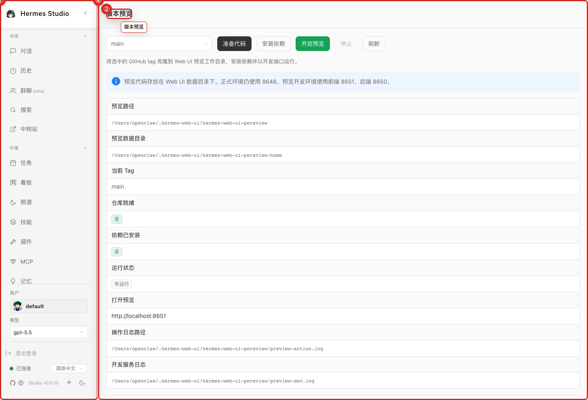
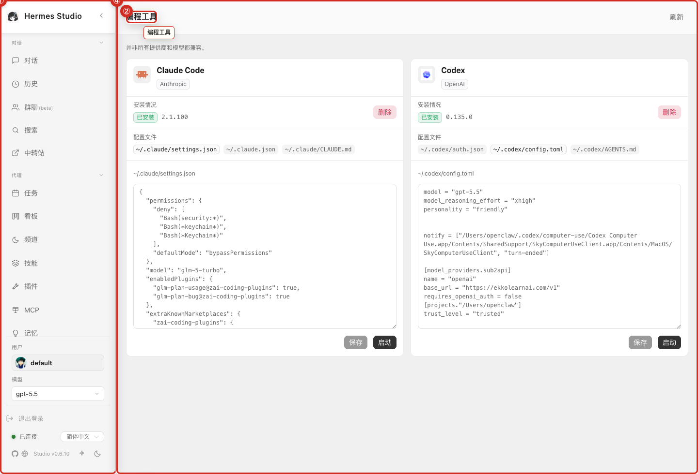
29. 附录
29.1 快捷键
| 快捷键 | 作用 | 当前状态 |
|---|---|---|
Enter | 聊天输入中发送或换行动作依设置而定。 | 需按当前输入框提示确认。 |
Shift + Enter | 常见为换行。 | 当前版本未单独弹出快捷键说明。 |
Esc | 关闭弹窗。 | 在搜索、创建弹窗中可按通用网页行为尝试。 |
29.2 术语表
| 术语 | 说明 |
|---|---|
| Hermes Studio | 当前桌面客户端和网页界面入口，用于管理 Hermes 智能体。 |
| Hermes 智能体 | 底层自学习智能体运行时，负责模型调用、工具调用、记忆、技能和网关。 |
| 网关 | 连接外部消息平台和智能体的服务。 |
| 模型服务商 | 模型服务提供方或兼容 OpenAI 的端点。 |
| 用户档案 | 隔离配置、会话、任务、记忆、技能和模型可见性的用户/运行档案。 |
| 设备 | 可被 Hermes Studio 发现、配对并远程连接的局域网或远程 Hermes 实例。 |
| MCP | 模型上下文协议，用于连接外部工具服务器。 |
| 任务 | 按定时表达式或预设计划自动运行的任务。 |